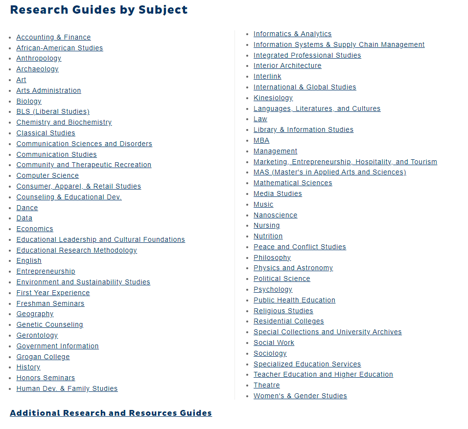

UNCG Library Website
The UNCG Library website is a comprehensive and user-friendly resource for students, faculty, and staff at the University of North Carolina at Greensboro. The website consists of several key components, including a search bar for accessing the library's collections, a list of online resources and databases, information about library services and events, and links to the library's social media accounts.
I think the website was created to facilitate a variety of tasks, such as conducting research, accessing online resources, and staying informed about library services and events. The website's clean and intuitive design makes it easy for users to quickly find the information they need and to navigate to different pages on the site.
Research Tools
In terms of facilitating specific tasks, the website does a good job of making it easy for users to conduct research. The search bar at the top of the page allows users to quickly search for books, articles, and other resources in the library's collections, and the list of online resources and databases provides access to a wealth of information on a wide range of subjects. The website also includes a feature called "Research Guides," which offers curated lists of resources on specific topics, such as business, history, and psychology. This is a useful tool for users who are looking for information on a specific subject, and who want to quickly access a selection of relevant and reliable sources.
Library Services and Events
In addition to facilitating research and access to online resources, the UNCG Library website also does a good job of providing information about library services and events. The website includes a section dedicated to library services, which provides detailed information about borrowing policies, study spaces, and other services offered by the library. This section is easy to find and navigate, making it simple for users to find the information they need.
The website also includes a calendar of events, which provides information about upcoming workshops, lectures, and other events at the library. This is a useful resource for students, faculty, and staff who want to stay informed about what is happening at the library, and who want to take advantage of the many educational and social opportunities it offers.
Conclusion
Overall, the components of the UNCG Library website make it easy for users to complete the tasks it was designed to facilitate. The website's clean and intuitive design, combined with its comprehensive range of resources and services, make it an excellent resource for students, faculty, and staff at the university. The inclusion of features such as the "Research Guides" and the calendar of events add valuable tools that enhance the user experience and make the website even more useful for the university community.
Visit the UNCG Library